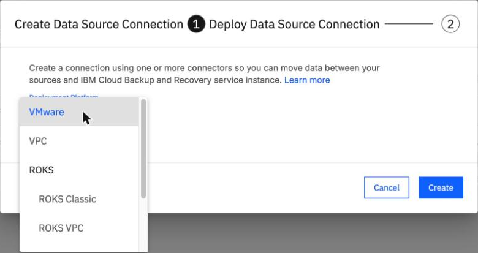
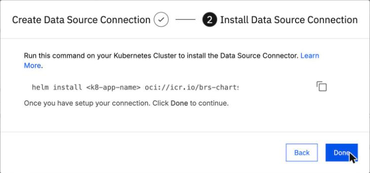
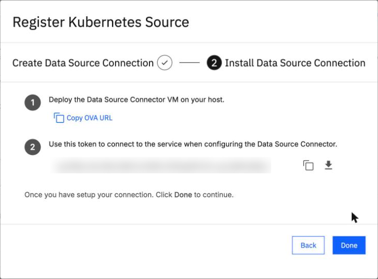
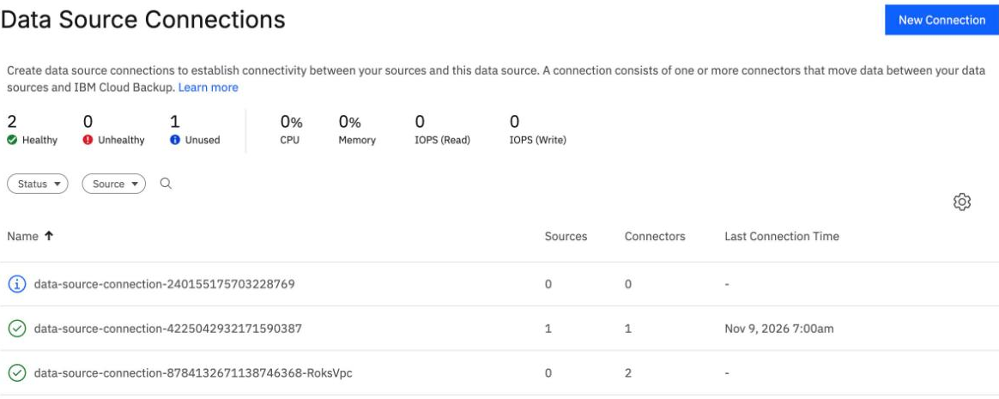

Connect a ROVS cluster
By the end you can say what the Data Source Connector does on a ROVS cluster, make the connection in the BRS console, and explain why the connector pod can stay Pending after Helm says deployed.
Northgate Freight is a made-up company. It runs VMs on a ROVS (OpenShift Virtualization) cluster, here called ng-cluster-01, and wants BRS to back them up. First BRS needs a connector on that cluster.
OpenShift Virtualization VM backup was not generally available when we tested it (5 October 2026). IBM lists it for the AU-SYD region only: its pages, updated 26 June 2026, call it "intended for testing and proof-of-concept scenarios in the AU-SYD region", and they still said so when we read them on 9 November 2026. Names were changed. Every screen and result comes from our lab on 1 and 2 October and 9 November 2026.
What the connector is, and what it needs
Before BRS can see a cluster, a small program must run on it. It is called the Data Source Connector. It is the channel between your cluster and the BRS service.
Northgate installs the connector. What else is on the cluster for VM backup when the install finishes?
Show the answer
IBM's guide says the Datamover (a DaemonSet) and Velero are deployed automatically during source registration. They are not part of the connector install. Unit 5.2 does the registration. In our lab, on 9 November 2026, after registration there was a Deployment velero and a DaemonSet cohesity-dm with 3 pods, one for each worker.
How much room does the connector need on the cluster?
Show the answer
Those are the figures in IBM's guide. A dedicated worker pool for the connector is optional: our lab ran it on the default pool.
Make the connection
These screens come from the BRS console in our lab on 9 November 2026. Click where you would click. After two misses the right place is marked.

You opened Data Source Connections and clicked New Connection. Which platform do you choose for a ROVS cluster?
Show where
Right. ROKS > ROKS VPC, then Create. The connection is made in System > Data Source Connections of the instance, not in the Sources wizard.

Step 2 shows the command that installs the connector. How do you take it?
Show where
Right: the copy button. The command holds the registration token. Do not paste it into a file you keep: the token carries an expiry time, so copy it when you install. Then click Done.

A learner makes the connection from the Register Source wizard instead, and sees this. What shows it is the wrong path?
Show where
Right. Copy OVA URL: this is the VMware flow, an OVA and a token, with no Helm command. In our lab on 9 November 2026 this path made a connection that stayed Unused. Make the connection from Data Source Connections.
Deployed, and yet Pending
Northgate runs the Helm command it copied, with the pull secret added and 2 replicas. Helm answers at once. One minute later, this is what the lab recorded:
STATUS: deployed 60 s later: pod brs-dsc-brs-ds-connector-chart-0 is Pending
The pod stays Pending. What went wrong?
Show the answer
The pod's claim for storage was Pending too: storageclass.storage.k8s.io "ibmc-vpc-block-metro-5iops-tier" not found. The chart uses that storage class by default, and the command as copied does not set one. That class is not on this ROVS cluster. The cluster's default class is ocs-storagecluster-ceph-rbd. In our lab on 2 October 2026 the pod said: "pod has unbound immediate PersistentVolumeClaims".
What fixed it?
Show the answer
On 9 November 2026 the lab ran helm uninstall, deleted the Pending claim, and installed again with --set volumeClaimTemplate.storageClass=ocs-storagecluster-ceph-rbd and --set replicaCount=2. Pod 0 was 1/1 Running after 2 min 34 s, and pod 1 a few minutes later. Helm leaves the claim behind, so remove a Pending one by hand.
Watch for this. In our lab Helm printed STATUS: deployed on 2 October and again on 9 November 2026, and the pod stayed Pending both times. Look at the pod and its claim, not at the Helm status.
Check that the connector checked in
After the fixed install, the lab went back to Data Source Connections.

The new connection's name ends in RoksVpc. Click the figure that shows the connector pods have checked in.
Show where
Right. A green tick and 2 connectors. On 9 November 2026 the lab saw this at 07:07 UTC.
A connection shows no connectors. Can you register the cluster through it?
Show the answer
The rule is: if the connection has no connectors, stop. In our lab on 1 October 2026, registrations through a connection with no connectors failed with Encountered HTTP connection error. Unit 5.2 comes back to this.
Three questions
Helm prints STATUS: deployed, and a minute later the connector pod is Pending. What do you look at?
Show the answer
In our lab the claim was Pending because the chart's default storage class was not on the cluster.
Where do you make the connection for a ROVS cluster?
Show the answer
The Sources wizard gives the VMware flow: an OVA link and a token, not a Helm command. In our lab it made a connection that stayed Unused.
What is the sign that the connector pods have checked in?
Show the answer
On 9 November 2026 the RoksVpc connection showed a green tick and 2 connectors.
You can connect a cluster
The connection is made in Data Source Connections, platform ROKS VPC. The copied Helm command sets no storage class, so on our lab cluster the pod stayed Pending until we set ocs-storagecluster-ceph-rbd. A healthy connection shows 2 connectors. OpenShift Virtualization VM backup was not generally available when tested, and IBM lists it for au-syd only.